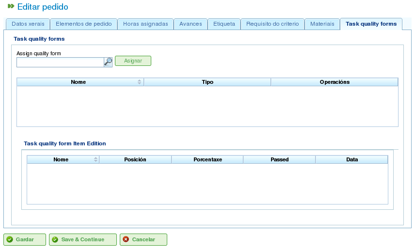

Projekty i Elementy Projektów
Contents
- Projekty
- Edytowanie Elementów Projektów
- Edytowanie Informacji o Elemencie Projektu
- Przeglądanie Godzin Przypisanych do Elementów Projektów
- Zarządzanie Postępem Elementów Projektów
- Zarządzanie Etykietami Projektów
- Zarządzanie Kryteriami Wymaganymi przez Element Projektu i Grupy Godzin
- Zarządzanie Materiałami
- Zarządzanie Formularzami Jakości
Projekty reprezentują pracę do wykonania przez użytkowników programu. Każdy projekt odpowiada projektowi, który firma zaoferuje swoim klientom.
Projekt składa się z jednego lub więcej elementów projektu. Każdy element projektu reprezentuje konkretną część pracy do wykonania i definiuje, jak praca nad projektem powinna być planowana i realizowana. Elementy projektów są zorganizowane hierarchicznie, bez ograniczeń co do głębokości hierarchii. Ta hierarchiczna struktura umożliwia dziedziczenie pewnych funkcji, takich jak etykiety.
Poniższe sekcje opisują operacje, które użytkownicy mogą wykonywać na projektach i elementach projektów.
Projekty
Projekt reprezentuje projekt lub pracę zlecone firmie przez klienta. Projekt identyfikuje projekt w planowaniu firmy. W odróżnieniu od kompleksowych programów zarządzania, LibrePlan wymaga jedynie pewnych kluczowych danych dla projektu. Dane te to:
- Nazwa projektu: Nazwa projektu.
- Kod projektu: Unikalny kod projektu.
- Całkowita wartość projektu: Całkowita wartość finansowa projektu.
- Szacowana data rozpoczęcia: Planowana data rozpoczęcia projektu.
- Data zakończenia: Planowana data zakończenia projektu.
- Osoba odpowiedzialna: Osoba odpowiedzialna za projekt.
- Opis: Opis projektu.
- Przypisany kalendarz: Kalendarz powiązany z projektem.
- Automatyczne generowanie kodów: Ustawienie nakazujące systemowi automatyczne generowanie kodów dla elementów projektów i grup godzin.
- Preferencja między zależnościami a ograniczeniami: Użytkownicy mogą wybrać, czy zależności czy ograniczenia mają priorytet w przypadku konfliktów.
Jednak pełny projekt zawiera również inne powiązane jednostki:
- Godziny przypisane do projektu: Całkowite godziny przydzielone do projektu.
- Postęp przypisany do projektu: Osiągnięty postęp w projekcie.
- Etykiety: Etykiety przypisane do projektu.
- Kryteria przypisane do projektu: Kryteria powiązane z projektem.
- Materiały: Materiały wymagane dla projektu.
- Formularze jakości: Formularze jakości powiązane z projektem.
Tworzenie lub edytowanie projektu można wykonać z kilku miejsc w programie:
- Z "Listy projektów" w przeglądzie firmy:
- Edytowanie: Kliknij przycisk edycji dla żądanego projektu.
- Tworzenie: Kliknij "Nowy projekt."
- Z projektu na wykresie Gantta: Przełącz na widok szczegółów projektu.
Użytkownicy mają dostęp do następujących zakładek podczas edytowania projektu:
Edytowanie szczegółów projektu: Ten ekran umożliwia użytkownikom edytowanie podstawowych danych projektu:
- Nazwa
- Kod
- Szacowana data rozpoczęcia
- Data zakończenia
- Osoba odpowiedzialna
- Klient
- Opis

Edytowanie projektów
Lista elementów projektu: Ten ekran umożliwia użytkownikom wykonywanie kilku operacji na elementach projektów:
- Tworzenie nowych elementów projektu.
- Awansowanie elementu projektu o jeden poziom wyżej w hierarchii.
- Degradowanie elementu projektu o jeden poziom niżej w hierarchii.
- Wcięcie elementu projektu (przenoszenie go w dół hierarchii).
- Cofnięcie wcięcia elementu projektu (przenoszenie go w górę hierarchii).
- Filtrowanie elementów projektu.
- Usuwanie elementów projektu.
- Przenoszenie elementu w hierarchii przez przeciąganie i upuszczanie.

Lista elementów projektu
Przypisane godziny: Ten ekran wyświetla całkowite godziny przypisane do projektu, grupując godziny wprowadzone w elementach projektu.

Przypisywanie godzin atrybuowanych do projektu przez pracowników
Postęp: Ten ekran umożliwia użytkownikom przypisywanie typów postępu i wprowadzanie pomiarów postępu dla projektu. Patrz sekcja "Postęp" w celu uzyskania szczegółowych informacji.
Etykiety: Ten ekran umożliwia użytkownikom przypisywanie etykiet do projektu i przeglądanie wcześniej przypisanych etykiet bezpośrednich i pośrednich. Patrz następna sekcja dotycząca edytowania elementów projektu, aby uzyskać szczegółowy opis zarządzania etykietami.

Etykiety projektu
Kryteria: Ten ekran umożliwia użytkownikom przypisywanie kryteriów, które będą miały zastosowanie do wszystkich zadań w projekcie. Kryteria te zostaną automatycznie zastosowane do wszystkich elementów projektu, z wyjątkiem tych, które zostały jawnie unieważnione. Grupy godzin elementów projektu, pogrupowane według kryteriów, mogą być również przeglądane, umożliwiając użytkownikom identyfikację kryteriów wymaganych dla projektu.

Kryteria projektu
Materiały: Ten ekran umożliwia użytkownikom przypisywanie materiałów do projektów. Materiały można wybierać z dostępnych kategorii materiałów w programie. Materiałami zarządza się w następujący sposób:
- Wybierz zakładkę "Szukaj materiały" na dole ekranu.
- Wprowadź tekst do wyszukiwania materiałów lub wybierz kategorie, dla których chcesz znaleźć materiały.
- System filtruje wyniki.
- Wybierz żądane materiały (można wybrać wiele materiałów, naciskając klawisz "Ctrl").
- Kliknij "Przypisz."
- System wyświetla listę materiałów już przypisanych do projektu.
- Wybierz jednostki i status do przypisania do projektu.
- Kliknij "Zapisz" lub "Zapisz i kontynuuj."
- Aby zarządzać odbiorem materiałów, kliknij "Podziel", aby zmienić status częściowej ilości materiału.

Materiały powiązane z projektem
Jakość: Użytkownicy mogą przypisać formularz jakości do projektu. Ten formularz jest następnie wypełniany w celu zapewnienia, że pewne działania powiązane z projektem zostały wykonane. Patrz następna sekcja dotycząca edytowania elementów projektów, aby uzyskać szczegółowe informacje na temat zarządzania formularzami jakości.

Formularz jakości powiązany z projektem
Edytowanie Elementów Projektów
Elementy projektów są edytowane z zakładki "Lista elementów projektu" przez kliknięcie ikony edycji. Otwiera to nowy ekran, na którym użytkownicy mogą:
- Edytować informacje o elemencie projektu.
- Przeglądać godziny przypisane do elementów projektów.
- Zarządzać postępem elementów projektów.
- Zarządzać etykietami projektów.
- Zarządzać kryteriami wymaganymi przez element projektu.
- Zarządzać materiałami.
- Zarządzać formularzami jakości.
Poniższe podsekcje szczegółowo opisują każdą z tych operacji.
Edytowanie Informacji o Elemencie Projektu
Edytowanie informacji o elemencie projektu obejmuje modyfikowanie następujących szczegółów:
- Nazwa elementu projektu: Nazwa elementu projektu.
- Kod elementu projektu: Unikalny kod elementu projektu.
- Data rozpoczęcia: Planowana data rozpoczęcia elementu projektu.
- Szacowana data zakończenia: Planowana data zakończenia elementu projektu.
- Całkowite godziny: Całkowite godziny przydzielone do elementu projektu. Godziny te mogą być obliczane na podstawie dodanych grup godzin lub wprowadzane bezpośrednio. Jeśli są wprowadzane bezpośrednio, godziny muszą być rozdzielone między grupy godzin, a nowa grupa godzin musi zostać utworzona, jeśli procenty nie odpowiadają początkowym procentom.
- Grupy godzin: Do elementu projektu można dodać jedną lub więcej grup godzin. Celem tych grup godzin jest zdefiniowanie wymagań dla zasobów, które zostaną przypisane do wykonania pracy.
- Kryteria: Można dodać kryteria, które muszą być spełnione, aby umożliwić generyczne przypisanie dla elementu projektu.

Edytowanie elementów projektów
Przeglądanie Godzin Przypisanych do Elementów Projektów
Zakładka "Przypisane godziny" umożliwia użytkownikom przeglądanie raportów pracy powiązanych z elementem projektu i sprawdzenie, ile z szacowanych godzin zostało już zrealizowanych.

Godziny przypisane do elementów projektów
Ekran jest podzielony na dwie części:
- Lista raportów pracy: Użytkownicy mogą przeglądać listę raportów pracy powiązanych z elementem projektu, w tym datę i godzinę, zasób oraz liczbę godzin poświęconych na zadanie.
- Wykorzystanie szacowanych godzin: System oblicza całkowitą liczbę godzin poświęconych na zadanie i porównuje je z szacowanymi godzinami.
Zarządzanie Postępem Elementów Projektów
Wprowadzanie typów postępu i zarządzanie postępem elementów projektów jest opisane w rozdziale "Postęp".
Zarządzanie Etykietami Projektów
Etykiety, opisane w rozdziale o etykietach, umożliwiają użytkownikom kategoryzowanie elementów projektów. Umożliwia to użytkownikom grupowanie informacji o planowaniu lub projektach na podstawie tych etykiet.
Użytkownicy mogą przypisywać etykiety bezpośrednio do elementu projektu lub do elementu projektu na wyższym poziomie w hierarchii. Po przypisaniu etykiety którąkolwiek z tych metod, element projektu i powiązane zadanie planowania są skojarzone z etykietą i mogą być używane do późniejszego filtrowania.

Przypisywanie etykiet dla elementów projektów
Jak pokazano na obrazie, użytkownicy mogą wykonywać następujące działania z zakładki Etykiety:
- Przeglądanie odziedziczonych etykiet: Przeglądaj etykiety powiązane z elementem projektu, które zostały odziedziczone z elementu projektu na wyższym poziomie. Zadanie planowania powiązane z każdym elementem projektu ma te same powiązane etykiety.
- Przeglądanie bezpośrednio przypisanych etykiet: Przeglądaj etykiety bezpośrednio powiązane z elementem projektu przy użyciu formularza przypisania dla etykiet niższego poziomu.
- Przypisywanie istniejących etykiet: Przypisuj etykiety wyszukując je wśród dostępnych etykiet w formularzu poniżej listy etykiet bezpośrednich. Aby wyszukać etykietę, kliknij ikonę lupy lub wprowadź pierwsze litery etykiety w polu tekstowym, aby wyświetlić dostępne opcje.
- Tworzenie i przypisywanie nowych etykiet: Twórz nowe etykiety powiązane z istniejącym typem etykiety z tego formularza. Aby to zrobić, wybierz typ etykiety i wprowadź wartość etykiety dla wybranego typu. System automatycznie tworzy etykietę i przypisuje ją do elementu projektu po kliknięciu "Utwórz i przypisz".
Zarządzanie Kryteriami Wymaganymi przez Element Projektu i Grupy Godzin
Zarówno projekt, jak i element projektu mogą mieć przypisane kryteria, które muszą być spełnione, aby praca mogła być wykonana. Kryteria mogą być bezpośrednie lub pośrednie:
- Kryteria bezpośrednie: Są one przypisywane bezpośrednio do elementu projektu. Są to kryteria wymagane przez grupy godzin w elemencie projektu.
- Kryteria pośrednie: Są one przypisywane do elementów projektów na wyższych poziomach hierarchii i są dziedziczone przez edytowany element.
Oprócz wymaganych kryteriów można zdefiniować jedną lub więcej grup godzin będących częścią elementu projektu. Zależy to od tego, czy element projektu zawiera inne elementy projektów jako węzły podrzędne, czy też jest węzłem liścia. W pierwszym przypadku informacje o godzinach i grupach godzin mogą być tylko przeglądane. Węzły liścia mogą być jednak edytowane. Węzły liścia działają w następujący sposób:
- System tworzy domyślną grupę godzin powiązaną z elementem projektu. Szczegóły, które można modyfikować dla grupy godzin, to:
- Kod: Kod dla grupy godzin (jeśli nie jest generowany automatycznie).
- Typ kryterium: Użytkownicy mogą wybrać przypisanie kryterium maszynowego lub pracowniczego.
- Liczba godzin: Liczba godzin w grupie godzin.
- Lista kryteriów: Kryteria do zastosowania do grupy godzin. Aby dodać nowe kryteria, kliknij "Dodaj kryterium" i wybierz jedno z wyszukiwarki, która pojawia się po kliknięciu przycisku.
- Użytkownicy mogą dodawać nowe grupy godzin z różnymi cechami niż poprzednie grupy godzin. Na przykład element projektu może wymagać spawacza (30 godzin) i malarza (40 godzin).

Przypisywanie kryteriów do elementów projektów
Zarządzanie Materiałami
Materiałami zarządza się w projektach jako lista powiązana z każdym elementem projektu lub projektem ogólnie. Lista materiałów zawiera następujące pola:
- Kod: Kod materiału.
- Data: Data powiązana z materiałem.
- Jednostki: Wymagana liczba jednostek.
- Typ jednostki: Typ jednostki używany do pomiaru materiału.
- Cena jednostkowa: Cena za jednostkę.
- Cena całkowita: Cena całkowita (obliczana przez pomnożenie ceny jednostkowej przez liczbę jednostek).
- Kategoria: Kategoria, do której należy materiał.
- Status: Status materiału (np. Otrzymany, Zamówiony, Oczekujący, W trakcie realizacji, Anulowany).
Praca z materiałami odbywa się w następujący sposób:
- Wybierz zakładkę "Materiały" na elemencie projektu.
- System wyświetla dwie podzakładki: "Materiały" i "Szukaj materiały."
- Jeśli element projektu nie ma przypisanych materiałów, pierwsza zakładka będzie pusta.
- Kliknij "Szukaj materiały" w lewej dolnej części okna.
- System wyświetla listę dostępnych kategorii i powiązanych materiałów.

Wyszukiwanie materiałów
- Wybierz kategorie, aby zawęzić wyszukiwanie materiałów.
- System wyświetla materiały należące do wybranych kategorii.
- Z listy materiałów wybierz materiały do przypisania do elementu projektu.
- Kliknij "Przypisz."
- System wyświetla wybraną listę materiałów na zakładce "Materiały" z nowymi polami do wypełnienia.

Przypisywanie materiałów do elementów projektów
- Wybierz jednostki, status i datę dla przypisanych materiałów.
W celu późniejszego monitorowania materiałów możliwa jest zmiana statusu grupy jednostek otrzymanego materiału. Odbywa się to w następujący sposób:
- Kliknij przycisk "Podziel" na liście materiałów po prawej stronie każdego wiersza.
- Wybierz liczbę jednostek, na które należy podzielić wiersz.
- Program wyświetla dwa wiersze z podzielonym materiałem.
- Zmień status wiersza zawierającego materiał.
Zaletą tego narzędzia podziału jest możliwość odbierania częściowych dostaw materiału bez konieczności czekania na całą dostawę, aby oznaczyć ją jako otrzymaną.
Zarządzanie Formularzami Jakości
Niektóre elementy projektów wymagają certyfikacji, że pewne zadania zostały ukończone, zanim będą mogły zostać oznaczone jako zakończone. Dlatego program ma formularze jakości, składające się z listy pytań uznawanych za ważne, jeśli zostaną pozytywnie odpowiedziane.
Ważne jest, aby pamiętać, że formularz jakości musi być wcześniej utworzony, aby mógł zostać przypisany do elementu projektu.
Aby zarządzać formularzami jakości:
Przejdź do zakładki "Formularze jakości".

Przypisywanie formularzy jakości do elementów projektów
Program ma wyszukiwarkę formularzy jakości. Istnieją dwa typy formularzy jakości: według elementu lub według procentu.
- Element: Każdy element jest niezależny.
- Procent: Każde pytanie zwiększa postęp elementu projektu o pewien procent. Procenty muszą sumować się do 100%.
Wybierz jeden z formularzy utworzonych w interfejsie administracyjnym i kliknij "Przypisz."
Program przypisuje wybrany formularz z listy formularzy przypisanych do elementu projektu.
Kliknij przycisk "Edytuj" na elemencie projektu.
Program wyświetla pytania z formularza jakości na dolnej liście.
Zaznacz pytania, które zostały ukończone jako osiągnięte.
- Jeśli formularz jakości jest oparty na procentach, pytania są odpowiadane w kolejności.
- Jeśli formularz jakości jest oparty na elementach, pytania mogą być odpowiadane w dowolnej kolejności.